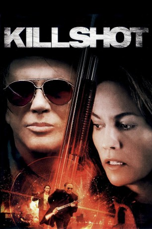
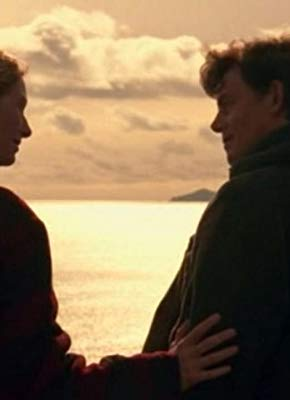

#3432 Killshot - Gnadenlose Jagd
Alternativ: Killshot
 
 IMDB-Wertung: 6.0 / 10
IMDB-Wertung: 6.0 / 10  Metascore: 0
Metascore: 0 
Armand Degas, genannt "Blackbird", ist ein professioneller Killer, der endlich aussteigen will. Als er einen alten Gangsterboss ausschaltet, hält er sich ganz an seine gewöhnlichen Regeln und läßt keine Zeugen am Leben, doch das gefällt seinem Auftraggeber gar nicht. Noch hat Armand also keine Ruhe zu erwarten, als ihn der hyperaktive Kleinganove Richy Nix zwingt, an einem Erpresserdeal rund um einen Häusermakler mitzumachen. Doch der geht grandios schief, denn anstatt der Zielperson, gehen die beiden ausgerechnet auf den Stahlarbeiter Wayne Colson los, der seine Frau Carmen im Büro besucht, um die gemeinsame Ehe zu retten. Wayne wehrt sich erfolgreich und beide haben nun Blackbirds Gesicht gesehen - von nun an ist das Paar in Lebensgefahr und die Killer müssen sich zu zwei Seiten absichern...
Jahr: 2008
Dauer: 95 Minuten
FSK: 16
Land: USA Studio: Third Rail ReleasingTonspuren: DTS - ,
Untertitel:
Auflösung: 1080p (1920x1080) Größe: 8652 MB
Genre: Thriller, Drama, Krimi
Regisseur: John Madden
Drehbuch: Hossein Amini, Elmore Leonard
Soundtrack: Klaus Badelt
Darsteller:
 Thomas Jane als Wayne Colson
Thomas Jane als Wayne Colson Diane Lane als Carmen Colson
Diane Lane als Carmen Colson Mickey Rourke als Armand 'Blackbird' Degas
Mickey Rourke als Armand 'Blackbird' Degas Joseph Gordon-Levitt als Richie Nix
Joseph Gordon-Levitt als Richie Nix Rosario Dawson als Donna
Rosario Dawson als Donna Hal Holbrook als Papa
Hal Holbrook als Papa- Brandon McGibbon als Blackbird's Kid Brother
- Craig Blair als Construction Site Foreman
- Michelle Arvizu als Nurse
 Don McManus als Nelson Davies
Don McManus als Nelson Davies- Beatriz Yuste als Checkout Girl
- Karen Robinson als 2nd FBI Agent
 Lois Smith als Lenore
Lois Smith als Lenore Steve Cumyn als 3rd FBI Agent / Real Estate Guy
Steve Cumyn als 3rd FBI Agent / Real Estate Guy- James Anthony als Drydock Foreman
 Tony Nappo als Dockworker
Tony Nappo als Dockworker- Inga Cadranel als Linda
 DTeflon als Agent Daniels
DTeflon als Agent Daniels- Joshua Rollins als Deck
- Shanly Trinidad als Mob Boss's Wife
- Alexis Butler als Girl in Hotel Room
- Robert Gow als Prospective Buyer
- Catherine Hayos als Prospective Buyer
- Peter Kelly Gaudreault als Blackbird's Brother
- Lynne Deragon als Mrs. Palino
- Richard Zeppieri als Son-in-Law / Mafia Boss
- Hazel Desjarlais als Old Woman, Walpole Island
- Aldred Montoya als Lionel
- Tim Campbell als Michigan Officer
- Tim Eddis als Michigan Officer
-  Tom McCamus als Paul Scallen / FBI Chief
- Michael Joseph Bernier als Mechanic
 Jim Codrington als 1st FBI Agent
Jim Codrington als 1st FBI Agent- Craig Eldridge als Cape Girardeau Buyer / Gerald
- Mark-Cameron Fraser als Dockworker
- Michael Rhoades als Dockworker
- Christine Brubaker als Dockworker's Wife
Datei: X:\2008(G-M)\Killshot - Gnadenlose Jagd (2008, FSK16, 1920x1080).mkv seit 06.04.2016
Festplatte: HD 2008(G-Z)-2009(A-F)
 Es gibt insgesamt 73 Filme in der Gruppe '2008(G-M)'
Es gibt insgesamt 73 Filme in der Gruppe '2008(G-M)'